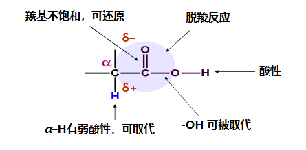
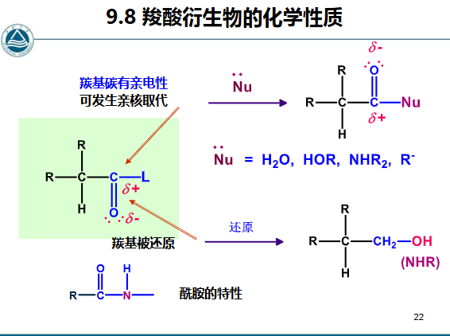

第九章 羧酸及其衍生物
章节概览
- 9.1 羧酸的命名规则
- 9.2 羧酸的酸性及影响因素
- 9.3 羧酸的化学反应（羟基取代、还原、脱羧、α-H反应）
- 9.4 羧酸的制备方法
- 9.5 羟基酸的反应与制备
- 9.6 羧酸衍生物的命名规则
- 9.7 羧酸衍生物的亲核取代反应
- 9.8 羧酸衍生物与有机金属试剂反应
- 9.9 羧酸衍生物的还原反应
- 9.10 酰胺的特殊反应（Hoffman降解、脱水）
- 9.11 β-二羰基化合物与缩合反应（Claisen、Dieckmann、Knoevenagel、Michael）
学习目标（重点）
- 掌握羧酸及其衍生物的系统命名规则
- 理解羧酸的酸性及取代基对酸性的影响
- 掌握羧酸的化学反应（羟基取代、还原、脱羧、α-H反应）
- 掌握羧酸的制备方法
- 理解羧酸衍生物的亲核取代反应及活性顺序
- 掌握羧酸衍生物与格氏试剂、Gilman试剂的反应
- 掌握羧酸衍生物的还原反应（LiAlH₄、Bouveault-Blanc、Rosenmund）
- 掌握Hoffman降解、Curtius重排、Schmidt重排等重要反应
- 理解β-二羰基化合物的性质及Claisen缩合反应
- 掌握Knoevenagel缩合、Michael加成、Robinson环化反应
一、羧酸
参考资料：有机化学9-1羧酸及其衍生物9-1 20260518.pdf | 有机化学9-2羧酸及其衍生物9-2 20260521.pdf | 有机化学9-2羧酸及其衍生物9-2 20260526.pdf
1.1 命名规则 命名
命名规则
- 系统命名（IUPAC）：选择含羧基的最长碳链为主链，称”某酸”；从羧基碳开始编号，取代基位次可用希腊字母、、、等表示，最末端碳原子可用表示
- 不饱和脂肪酸：选择同时含有羧基和不饱和碳原子在内的最长碳链为主链，称为”某烯酸”或”某炔酸”，编号从羧基碳开始
- 脂环族羧酸：将环作为取代基，看做甲酸衍生物
- 多元羧酸：选择含有尽可能最多羧基在内的最长碳链为主链，在”酸”前面标明羧基数目
- 芳香酸：以苯甲酸为母体，编号从羧基所连碳开始
1.2 化学性质分析

1.3 酸性 酸碱反应
酸性顺序
影响因素
- EWG连接-COOH使电离增加，酸性增强 基团分类
- EDG减弱酸性
- 在Ph上，邻位影响最大
1.4 反应
(1) -OH被取代，生成羧酸衍生物
| 反应类型 | 反应式 | 条件 |
|---|---|---|
| 生成酰卤 取代 | - | |
| 生成酰卤 取代 | - | |
| 生成酰溴 取代 | - | |
| 生成酸酐 取代 | 加热脱水；连接EDG的脱-OH，连接EWG的脱H 控温 | |
| 生成酯 取代 | 酸催化，可逆反应；羧酸脱-OH或醇脱-OH（叔醇）立体选择性 | |
| 生成酰胺 取代 | 一般用酰卤或酸酐制备 |
酯化机理
- 羧酸脱-OH：见屏幕截图 2026-05-28 210647.png
- 醇脱-OH（叔醇）：见屏幕截图 2026-05-28 212957.png
{kind=link}
{kind=link}
(2) 还原反应 还原
注意事项
- 只能用或还原
- 不可用
(3) 脱羧反应 脱气体
脱羧条件
R是EWG时容易发生脱羧反应。
(a) Kolbe合成法 人名反应
电解羧酸盐溶液：
(b) 二元酸的受热反应
| 碳链长度 | 反应类型 | 产物 |
|---|---|---|
| 较短 | 脱羧 | 一元酸 + |
| 较长 | 脱水 | 环状酸酐（五元环或六元环） |
Blanc规律 人名反应
容易形成五元环或六元环化合物。
(4) -H反应
(a) Hell-Volhard-Zelinsky反应 人名反应 取代
后续反应
(5) 羧酸的制备
| 方法 | 反应式 | 说明 |
|---|---|---|
| 烃类氧化 | - | CO制备（见pdf） |
| 伯醇和醛的氧化 氧化 | 控pH反应 控pH反应 | |
| 甲基酮的卤仿反应 | 先卤仿再酸性水解 | |
| 腈的水解 | - | |
| 格氏试剂与CO₂反应 人名反应 | - | |
| Kolbe-Schmitt反应 人名反应 | 生成邻羟基苯甲酸；生成对位产物 [[术语#ph上的位置关系 |
(6) 羟基酸的反应
| 类型 | 反应 | 条件 |
|---|---|---|
| -羟基酸 | 2equiv加热成酯 | 加热 |
| -羟基酸 | 消除，-C与-C成双键 | 酸性条件 控pH反应 |
| 和-羟基酸 | 成内酯 | 酸性条件 控pH反应 |
(7) 羟基酸的制备
| 方法 | 反应式 |
|---|---|
| 水解法 | |
| Reformatsky反应 人名反应 | 见上 |
二、羧酸衍生物
2.1 命名规则 命名
命名规则
- 酰胺：将羧酸的”酸”换成”酰胺”；XX胺类则为”X酰X胺”；成环则叫内酰胺
- 腈：将羧酸的”酸”换成”腈”
- 酸酐：同酸为”X酸酐”；不同酸为”X酸X酐”
- 酯：酸名+醇名+酯
- 官能团优先级：羧酸 > 磺酸 > 酸酐 > 酯类 > 酰卤 > 酰胺 > 腈 > 醛酮 > 醇 > 酚 > 胺 > 醚
羧酸衍生物作为官能团的命名见屏幕截图 2026-05-29 161305.png
{kind=link}
2.2 化学性质分析

2.3 反应
(1) 亲核取代 取代
反应活性顺序
酰氯 > 酸酐 > 羧酸 > 酯类 > 酰胺
活性原理
(a) 水解 控pH反应
- 酰胺水解生成
- 氰基水解生成
(b) 醇解 控pH反应
(c) 氨解
(2) 与有机金属试剂反应 加成
| 试剂 | 反应式 | 特点 |
|---|---|---|
| 格氏试剂 | 最终生成叔醇；控低温可停留在酮阶段；用腈则最后是酮 控温 | |
| Gilman试剂 | 活性较低，只能和酰氯和醛酮反应；从酰氯制备酮 |
(3) 还原反应 还原
| 衍生物 | 反应式 | 特点 |
|---|---|---|
| 酰卤、酸酐、酯类 | 生成醇 | |
| 酰胺 | 生成对应的胺类 | |
| 腈 | - | 同酰胺，生成 |
| 酯类（Bouveault-Blanc反应） 人名反应 | 不还原不饱和键，可制取不饱和醇 | |
| 酰卤（Rosenmund还原） 人名反应 | 还原成醛基，不会继续还原 |
其他还原剂
可用或
(4) 酰胺的反应
(a) 酸碱性
酰胺同时具有酸碱性。
(b) 脱水 控温
(c) Hoffman降解 人名反应
特点
-C的手性不变。
{kind=link}
(5) Curtius重排和Schmidt重排 人名反应
| 反应 | 反应式 |
|---|---|
| Curtius重排 | |
| Schmidt重排 |
(6) 衍生物
| 化合物 | 反应式 |
|---|---|
| 光气 | |
| 尿素 |
(7) 酮-烯醇互变异构
要点
- 烯醇互变异构在羧酸衍生物里均可出现，但稳定性较低
- -二羰基化合物（）：容易形成共轭，双键更稳定
- 如果R,R’为EDG则烯醇式不稳定；如果一个基团是EWG则容易在这一侧形成烯醇互变
- 验证反应：
(8) Claisen缩合 人名反应
特点
- 原理：2equiv的酯，一个脱一个脱-H，碱拔H后和成键
- 作用：合成1,3-二羰基化合物
- 类似羟醛缩合 控pH反应
(9) Dieckmann缩合 人名反应
原理和Claisen一致，是端二酯分子内缩合生成环。
(10) 乙酰乙酸乙酯的反应
| 反应 | 说明 |
|---|---|
| 脱羧 | 控pH反应 控温 |
| 烷基化 | 需要碱性环境利于进攻 控pH反应 |
(11) Knoevenagel缩合 人名反应 控pH反应
概念
醛、酮和含有双重致活的活泼亚甲基化合物在弱碱（胺、吡啶、哌啶）催化下的缩合反应。
{kind=link}
(12) Michael加成 人名反应 控pH反应
概念
-不饱和醛酮和Nu 的1,4-共轭加成。
{kind=link}
{kind=link}
(13) Robinson环化 人名反应
Michael加成的产物再在碱性条件下分子内羟醛缩合成环 控pH反应。
(14) 活泼亚甲基的反应
的H活泼，C能被Nu进攻，从而延长碳链。
知识检查
AI 认为需要修正的内容：
- “Kolbe合成法：电解羧酸盐溶液得” → 更准确地说，是两个羧酸根负离子在阳极失去电子后脱羧生成烷基自由基，然后两个烷基自由基偶联生成烷烃，产物应为（如果是单羧酸盐）。
- “酰胺水解生成” → 不完全准确。伯酰胺水解生成，仲酰胺生成，叔酰胺生成。
- “氰基水解生成” → 正确，但更准确地说，是先生成酰胺，再水解生成羧酸和（酸性条件）或（碱性条件）。
- “Curtius重排和Schmidt重排最终产物都是” → 正确，但中间产物都是异氰酸酯（），水解后生成胺。
相关笔记
- 命名 — 有机化合物命名规则
- 术语 — 有机化学常用术语表
- 醛酮 — Reformasky反应、羟醛缩合
- 醇酚醚 — 羧酸与醇的酯化反应
- 卤代烃 — 格氏试剂与酯的反应
- 芳烃和芳香性 — 芳香羧酸的反应
- 胺及杂环化合物 — 酰胺水解、Hoffman降解
- 不饱和烃和共轭体系 — 羧酸衍生物的加成反应
整理自：课堂笔记及参考课件